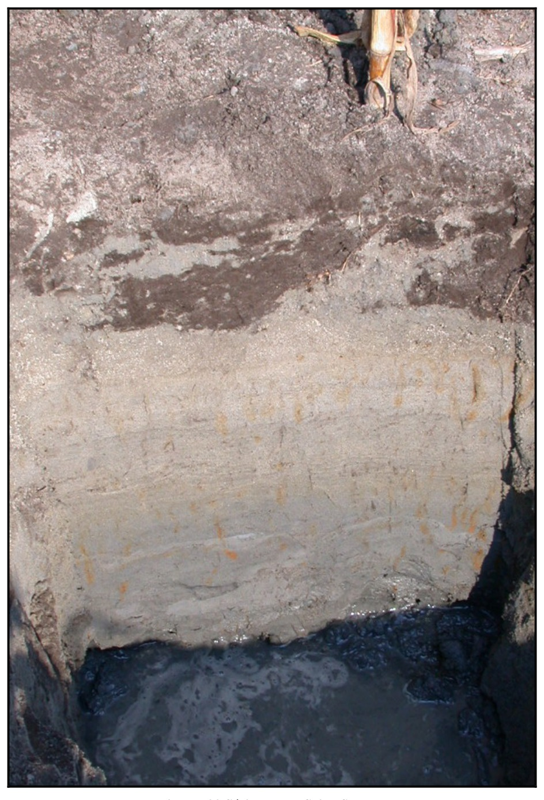

Identification & Caractéristiques Générales
La série de Saint-Samuel est développée sur des sables fins à très fins, d'origine fluviatile, estuarienne ou marine, formant un recouvrement sableux sus-jacent aux argiles sensibles de la mer de Champlain. Ces dépôts meubles profonds occupent les positions topographiques subhorizontales à légèrement déprimées des basses-terres du Saint-Laurent, caractérisées par des pentes de 0 % à 2 %. La géomorphologie de ces secteurs correspond à des bassins de sédimentation lente ou à des zones d'accumulation marginales en bordure des anciens rivages et des cours d'eau de la plaine.
Le profil pédologique se caractérise par un drainage naturel mauvais à très mauvais et une perméabilité modérée. La nappe phréatique demeure affleurante ou maintenue à faible profondeur durant une grande partie de la saison de végétation, ce qui entraîne une gleyification prononcée du substratum. En surface, le profil présente fréquemment un horizon organique ou organo-minéral (Op ou Oh) très humifère, parfois semi-tourbeux, d'une épaisseur avoisinant 20 cm, caractérisé par une teneur élevée en matière organique et une absence de structure nette. Le sous-sol immédiat est constitué d'un sable gris, massif et gleyifié (Cg). La réaction du sol varie de fortement à très fortement acide dans l'horizon supérieur, devenant fortement à moyennement acide dans le matériau sous-jacent.
Sur le plan agronomique, les sols de la série Saint-Samuel présentent des contraintes majeures liées à l'engorgement hydrique persistant et au réchauffement printanier très lent, ce qui retarde significativement la mise en culture. L'implantation de systèmes de drainage souterrain intensif est un prérequis indispensable pour abaisser la nappe phréatique et permettre une valorisation agricole adéquate. Une fois drainés, chaulés pour corriger l'acidité et fertilisés rationnellement, ces sols conviennent particulièrement aux cultures maraîchères ainsi qu'à certaines productions spécialisées. En l'absence d'aménagements, la régie est limitée aux prairies humides ou aux peuplements forestiers hygrophiles dominés par le cèdre, le bouleau gris, le mélèze et l'aulne.
Caractères Distinctifs & Morphologie Génétique (Comté de Dorchester — Page 69)
- Topographie : horizontale à déprimée
- Drainage : mauvais
- Pierrosité : nulle — 0
- Grand-groupe génétique : podzol
- Degré d'érosion : nul
- Classes d'utilisation : (C) 4W (Q) 4d
- Association géographique : Saint-Jude, Saint-Sophie
- Végétation naturelle : mélèzes, épinettes noires, cèdres
Classification Taxonomique & Environnement Pédologique
| Ordre Pédologique | Gleysolique |
|---|---|
| Grand Groupe (SCSS) | Gleysol humique |
| Sous-Groupe Taxonomique | Gleysol humique régosolique |
| Famille Pédologique | Sableuse, mixte sableux, acide |
| Mode de Dépôt Parental | Marin |
| Classe de Drainage Naturel | Mal drainé |
| Régime Thermique & Humidité | Frais / Subaquique |
Description Morphologique du Profil Type
Séquences génétiques des horizons pédologiques caractérisant le profil type représentatif de la série Saint-Samuel :
Profil naturel (vierge) — Comté de Champlain
✓ Source : Comté de Champlain — Page 43Couleur Munsell : 5YR 2/1
Structure & Consistance : Polyédrique à granulaire
Description morphologique : Sable humifère noir (5YR 2/1); pH : 4.1.
Couleur Munsell : 5YR 3/3
Structure & Consistance : Granulaire
Description morphologique : Sable brun rouge foncé (5YR 3/3); structure granulaire; taches de rouille; friable; pH : 4.6.
Couleur Munsell : 5YR 6/1
Structure & Consistance : Granulaire
Description morphologique : Sable fin gris (5YR 6/1); structure granulaire; pH : 5.1.
Profil forestier / boisé — Comté de Dorchester
✓ Source : Comté de Dorchester — Page 70Couleur Munsell : 7.5YR 2/0
Structure & Consistance : Polyédrique à granulaire
Description morphologique : Humus plus ou moins minéralisé de couleur noire (7.5YR 2/0); pH: 5.5.
Couleur Munsell : 5Y 6/1, 10YR 6/6
Structure & Consistance : Polyédrique à granulaire
Description morphologique : Sable loameux gris (5Y 6/1) avec taches de rouille jaune-brun (10YR 6/6); sans structure; légèrement compact; pH: 5.7.
Couleur Munsell : 5Y 6/1
Structure & Consistance : Polyédrique à granulaire
Description morphologique : Loam sableux à sable grossier gris (5Y 6/1); sans structure; compact; pH: 6.1.
Profil représentatif — Comté de Drummond
✓ Source : Comté de Drummond — Page 115Couleur Munsell : Non précisée
Structure & Consistance : Polyédrique à granulaire
Description morphologique : Débris de feuilles mortes.
Couleur Munsell : 7.5YR 2/0
Structure & Consistance : Fortement granulée
Description morphologique : Loam sableux humifère, noir (7.5 YR 2/0) à l'état humide; structure fortement granulée, bien développée; très friable. La réaction (pH 5.6) est moyennement acide.
Couleur Munsell : 10YR 2/2
Structure & Consistance : Fortement granulée
Description morphologique : Loam sableux humifère, brun très foncé (10 YR 2/2) à l'état humide; structure fortement granulée; très friable. La réaction (pH 5.6) est moyennement acide.
Couleur Munsell : 5Y 6/3, 10YR 6/6
Structure & Consistance : Polyédrique à granulaire
Description morphologique : Sable moyen, olive pâle (5 Y 6/3) à l'état humide; quelques taches et quelques trainées jaune brun (10 YR 6/6 le long des racines; sans structure; légèrement tassé. La réaction (pH 5.9) est moyennement acide.
Couleur Munsell : 5Y 6/3
Structure & Consistance : Polyédrique à granulaire
Description morphologique : Sable moyen, olive pâle (5 Y 6/3); sans structure; parfois tassé, parfois ouvert. La réaction (pH 6.3) est faiblement acide.
Profil cultivé (agricole) — Comté de Joliette
✓ Source : Comté de Joliette — Page 64Couleur Munsell : 10YR 2/2
Structure & Consistance : Polyédrique à granulaire
Description morphologique : Sable loameux, sans structure, brun très foncé (10YR 2/2), friable. pH: 5.8.
Couleur Munsell : 10YR 6/1, 5Y 6/3, 10YR 5/6
Structure & Consistance : Faiblement lamellaire
Description morphologique : Sable loameux, structure faiblement lamellaire, gris (10YR 6/1) à olive pâle (5Y 6/3), avec traînées brun jaune (10YR 5/6), légèrement cimenté. pH: 6.1.
Couleur Munsell : 5Y 5/1
Structure & Consistance : À tendance lamellaire
Description morphologique : Sable très fin, structure à tendance lamellaire, gris (5Y 5/1), légèrement cimenté. pH: 6.4.
Profil représentatif — Comté de Lévis
✓ Source : Comté de Lévis — Page 60Couleur Munsell : 7.5YR 2/0
Structure & Consistance : Polyédrique à granulaire
Description morphologique : Sable loameux de couleur noir (7.5YR 2/0) d'épaisseur variable; pH: 5.6.
Couleur Munsell : 10YR 6/2
Structure & Consistance : Polyédrique à granulaire
Description morphologique : Sable gris brun clair (10YR 6/2) avec mouchetures de rouille, sans structure; pH: 6.1.
Couleur Munsell : 10YR 5/1
Structure & Consistance : Polyédrique à granulaire
Description morphologique : Sable gris (10YR 5/1–6/1) parfois tassé, sans structure; pH: 6.2.
Profil représentatif — Comté de Lotbinière
✓ Source : Comté de Lotbinière — Page 51Couleur Munsell : Non précisée
Structure & Consistance : Polyédrique à granulaire
Description morphologique : Sable humifère de couleur noire et d'épaisseur variable; pH: 5.5.
Couleur Munsell : Non précisée
Structure & Consistance : Polyédrique à granulaire
Description morphologique : Sable gris avec mouchetures de rouille, sans structure; pH: 7.0.
Couleur Munsell : Non précisée
Structure & Consistance : Polyédrique à granulaire
Description morphologique : Sable uniformément gris, sans structure; pH: 7.5.
Profil forestier (sous boisé) — Comté de Mégantic
✓ Source : Comté de Mégantic — Page 24Couleur Munsell : 10YR 2/1, 10YR 3/1
Structure & Consistance : Polyédrique à granulaire
Description morphologique : Horizon organique semi-décomposé noir (10 YR 2/1 h), gris très foncé (10 YR 3/1 s); sans structure; très friable; racines très abondantes, de toutes les grosses, horizontales et obliques; limite abrupte, ondulée; épaisseur de 15 à 36 cm; fortement acide.
Couleur Munsell : 10YR 6/1
Structure & Consistance : Polyédrique à granulaire
Description morphologique : Sable fin gris (10 YR 6/1 h), gris clair (2,5 Y 6,5/1 s); particulaire; très friable; limite nette, régulière, épaisseur de 10 à 18 cm; moyennement acide.
Couleur Munsell : 10YR 6/1, 5Y 5/5
Structure & Consistance : Polyédrique à granulaire
Description morphologique : Sable gris (10 YR 6/1 h), olive (5 Y 5/5 s); particulaire; meuble; limite nette, régulière; épaisseur de 33 à 46 cm; moyennement acide.
Couleur Munsell : 10YR 6/1, 5Y 5/5
Structure & Consistance : Polyédrique à granulaire
Description morphologique : Sable gris (10 YR 6/1 h), olive (5 Y 5/5 s); particulaire; meuble; limite nette, régulière; épaisseur de 15 à 20 cm; extrêmement acide.
Couleur Munsell : 5Y 4/1 (matrice), 5Y 7/0 (marbrures)
Structure & Consistance : Polyédrique à granulaire
Description morphologique : Sable fin gris foncé (5 Y 4/1 h), gris clair (2,5 Y 7/0 s); marbrures brun jaune (10 YR 5/6 h); particulaire; meuble; effervescence à HCl 10%, forte; très fortement acide.
Profil forestier (sous boisé) — Comté de Arthabaska — Variante fait partie
✓ Source : Comté de Arthabaska — Page 21Couleur Munsell : 5YR 2/1, 10YR 3/2
Structure & Consistance : Polyédrique à granulaire
Description morphologique : Couche organique très bien décomposée noire à brun-rouge foncé (5 YR 2/1,5 h), brun-gris très foncé (10 YR 3/2 s); très friable; racines abondantes, moyennes, fines, très fines et microscopiques, non orientées, exo-agrégat; limite abrupte, ondulée; épaisseur de 20 à 41 cm; moyennement acide.
Couleur Munsell : 10YR 8/1, 10YR 5/8
Structure & Consistance : Polyédrique à granulaire
Description morphologique : Sable blanc (10 YR 8/1,5 h), gris à gris clair (10 YR 6,5/1 s); taches assez nombreuses, grandes, faibles, brun-jaune (10 YR 5/8 h); particulaire; meuble; très peu de racines, très fines et microscopiques, obliques, exo-agrégat; limite nette, régulière; épaisseur de 25 à 29 cm; moyennement acide.
Couleur Munsell : 10YR 7/1, 10YR 6/3, 5YR 5/8
Structure & Consistance : Polyédrique à granulaire
Description morphologique : Sable gris clair (10 YR 7/1 h), brun pâle (10 YR 6/3 s); taches assez nombreuses, grandes, très marquées, rouge-jaune (5 YR 5/8 h); particulaire; meuble; limite nette, régulière; épaisseur de 50 à 60 cm; moyennement acide.
Couleur Munsell : 5YR 5/8
Structure & Consistance : Polyédrique à granulaire
Description morphologique : Sable fin gris (N 5/ h), gris (N 6/ s); taches assez nombreuses, grandes, très marquées, rouge-jaune (5 YR 5/8 h); particulaire; meuble; extrêmement acide.
Profil représentatif — Comté de Nicolet
✓ Source : Comté de Nicolet — Page 92Couleur Munsell : Non précisée
Structure & Consistance : Polyédrique à granulaire
Description morphologique : Sable humifère, noirâtre; pH 5.0-5.8. L'épaisseur varie de 5 à 10 pouces.
Couleur Munsell : Non précisée
Structure & Consistance : Ni consistance
Description morphologique : Sable, gris tacheté de gley; sans structure ni consistance; pH 5.5-6.0. L'épaisseur varie de 6 à 10 pouces.
Couleur Munsell : Non précisée
Structure & Consistance : Polyédrique à granulaire
Description morphologique : Sable, gris bleu; sans structure, parfois tassé; pH 5.8-6.5.
Profil naturel (vierge) — Comté de Portneuf
✓ Source : Comté de Portneuf — Page 69Couleur Munsell : 2.5YR 2/4, 7.5YR 3/2
Structure & Consistance : Polyédrique à granulaire
Description morphologique : Matière organique moyennement décomposée, brun-rouge foncé (2.5YR 2/4 h), brun foncé (7.5YR 3/2 s) ; racines peu abondantes, grossières à microscopiques, non-orientées, exo-agrégats ; limite abrupte, régulière ; pH : 5.7.
Couleur Munsell : 7.5YR 5/2
Structure & Consistance : Polyédrique à granulaire
Description morphologique : Sable brun (7.5YR 5/2 h) ; particulaire ; meuble ; racines peu abondantes, très fines et microscopiques, non-orientées, exo-agrégats ; limite abrupte, régulière.
Couleur Munsell : 5YR 4/8, 7.5YR 5/6
Structure & Consistance : Polyédrique à granulaire
Description morphologique : Sable rouge-jaune (5YR 4/8 h), brun vif (7.5YR 5/6 s) ; taches peu nombreuses, faibles ; particulaire ; meuble ; racines abondantes, moyennes, obliques, exo-agrégats ; limite graduelle, régulière ; pH : 4.5.
Couleur Munsell : 10YR 5/8, 10YR 6/6
Structure & Consistance : Polyédrique à granulaire
Description morphologique : Sable brun-jaune (10YR 5/8 h), jaune-brun (10YR 6/6 s) ; taches peu nombreuses, faibles ; particulaire ; meuble ; racines peu abondantes, grossières et moyennes, obliques, exo-agrégats ; limite distincte, ondulée ; pH : 4.8.
Couleur Munsell : 7.5YR 5/2, 2.5Y 7/2
Structure & Consistance : Polyédrique à granulaire
Description morphologique : Sable brun (7.5YR 5/2 h), gris clair (2.5Y 7/2 s) ; taches peu nombreuses, faibles ; particulaire ; meuble ; pH : 4.8.
Profil représentatif — Comté de Bagot
✓ Source : Comté de Bagot — Page 84Couleur Munsell : Non précisée
Structure & Consistance : Polyédrique à granulaire
Description morphologique : Sable humifère, noirâtre. Epaisseur varie de 5 à 10 pouces. pH. 5.0 - 5.8.
Couleur Munsell : Non précisée
Structure & Consistance : Polyédrique à granulaire
Description morphologique : Sable gris tacheté de gley. L'épaisseur varie de 6 à 10 pouces. pH. 5.5 - 6.0
Couleur Munsell : Non précisée
Structure & Consistance : Polyédrique à granulaire
Description morphologique : Sable gris bleu, parfois tassé. Le quartz prédomine. pH 5.8 - 6.5.
Couleur Munsell : Non précisée
Structure & Consistance : Polyédrique à granulaire
Description morphologique : Substratum d'argile alcaline Champlain à environ trois pieds.
Profil représentatif — Comté de Trois-rivières
✓ Source : Comté de Trois-rivières — Page 37Couleur Munsell : 7.5YR 4/2, 2.5YR 4/0
Structure & Consistance : Polyédrique à granulaire
Description morphologique : Loam, sans structure, brun foncé (7.5YR 4/2), avec taches de gley de couleur gris foncé (2.5YR 4/0), meuble; pH : 6.3.
Couleur Munsell : 5Y 5/2, 7.5YR 4/4
Structure & Consistance : Polyédrique à granulaire
Description morphologique : Loam, sans structure, gris olive (5Y 5/2) avec traînées de couleur brun (7.5YR 4/4), ferme; pH : 5.8.
Couleur Munsell : 5Y 6/1, 5Y 4/3
Structure & Consistance : Polyédrique à granulaire
Description morphologique : Sable fin, sans structure, gris (5Y 6/1), avec traînées de couleur olive (5Y 4/3), ferme; pH : 6.8.
Profil cultivé (agricole) — Comté de Verchères
✓ Source : Comté de Verchères — Page 103Couleur Munsell : Non précisée
Structure & Consistance : Granulaire
Description morphologique : Tourbe forestière, très décomposée; structure granulaire, assez développée; consistance très friable; très poreux; limite abrupte, régulière; réaction moyennement acide.
Couleur Munsell : 5YR 5/2 (matrice), 5Y 5/4 (marbrures)
Structure & Consistance : Polyédrique à granulaire
Description morphologique : Sable; brun grisâtre (2,5YR 5/2); mouchetures brun olivâtre clair (2,5Y 5/4), assez nombreuses, fines, assez contrastées; particulaire; consistance meuble; très poreux; limite nette, régulière; réaction faiblement acide.
Couleur Munsell : 5Y 5/1 (matrice), 5Y 5/5 (marbrures)
Structure & Consistance : Polyédrique à granulaire
Description morphologique : Sable; gris à brun grisâtre (2,5Y 5/1); mouchetures brun olivâtre clair (2,5Y 5/5), très nombreuses, fines et moyennes, très contrastées; particulaire; consistance meuble; très poreux; limite nette, régulière; réaction faiblement acide.
Couleur Munsell : 5Y 4/1
Structure & Consistance : Polyédrique à granulaire
Description morphologique : Sable; gris foncé (5Y 4/1); particulaire; consistance meuble; très poreux; limite nette, régulière; réaction neutre.
Profil naturel (vierge) — Comté de Yamaska
✓ Source : Comté de Yamaska — Page 72Couleur Munsell : Non précisée
Structure & Consistance : Polyédrique à granulaire
Description morphologique : Brûlé
Couleur Munsell : Non précisée
Structure & Consistance : Polyédrique à granulaire
Description morphologique : Brûlé
Couleur Munsell : Non précisée
Structure & Consistance : Finement granulée
Description morphologique : Sable humifère noir; structure finement granulée, faiblement développée; sans consistance; pH : 4.8.
Couleur Munsell : Non précisée
Structure & Consistance : Polyédrique à granulaire
Description morphologique : Bande diffuse de sable gris foncé avec débris de matière organique; pH : 4.9.
Couleur Munsell : Non précisée
Structure & Consistance : Polyédrique à granulaire
Description morphologique : Sable gris brun clair; sans structure, ni consistance; pH : 5.4.
Couleur Munsell : Non précisée
Structure & Consistance : Polyédrique à granulaire
Description morphologique : Sable gris clair; sans structure, ni consistance; pH : 5.6.
Profil cultivé (agricole) — Comté de Yamaska
✓ Source : Comté de Yamaska — Page 74Couleur Munsell : Non précisée
Structure & Consistance : Polyédrique à granulaire
Description morphologique : Sable humifère, noirâtre; pH : 5.0-5.8.
Couleur Munsell : Non précisée
Structure & Consistance : Polyédrique à granulaire
Description morphologique : L'épaisseur varie de 5 à 10 pouces.
Couleur Munsell : Non précisée
Structure & Consistance : Ni consistance
Description morphologique : Sable, gris tacheté de rouille; sans structure ni consistance; pH : 5.5-6.0. L'épaisseur varie de 6 à 10 pouces.
Profil représentatif — Comté de Huntingdon
✓ Source : Comté de Huntingdon — Page 151Couleur Munsell : Non précisée
Structure & Consistance : Faiblement mieteuse
Description morphologique : Sable humifère, noirâtre, structure faiblement mieteuse. pH: 5.0 — 5.8.
Couleur Munsell : Non précisée
Structure & Consistance : Particulaire sans consistance
Description morphologique : Sable gris à brun olive clair, structure particulaire sans consistance, taches passant de brun à brun plus foncé. pH: 5.5 — 6.0.
Couleur Munsell : Non précisée
Structure & Consistance : Particulaire
Description morphologique : Sable, gris bleu, structure particulaire, parfois tassé. Le quartz domine et est accompagné de feldspaths, de ferromagnésiens et de magnétite. pH: 5.8 — 6.5.
Couleur Munsell : Non précisée
Structure & Consistance : Polyédrique à granulaire
Description morphologique : Substratum d'argile alcaline Champlain à 3 ou 4 pieds.
Profil représentatif — Comté de Berthier
✓ Source : Comté de Berthier — Page 61Couleur Munsell : Non précisée
Structure & Consistance : Faiblement mietteuse
Description morphologique : Epaisseur variable, sable humifère, noirâtre, structure faiblement mietteuse. pH: 5.5. – 5.8.
Couleur Munsell : 5Y 6/3, 10YR 5/6
Structure & Consistance : Polyédrique à granulaire
Description morphologique : Sable moyen à grossier, gris à olive pâle (5 Y 6/3) avec taches de gley brun jaune (10 YR 5/6). Ces taches sont parfois disposées en lit. pH: 6.0 – 7.0.
Couleur Munsell : 5Y 5/1
Structure & Consistance : Polyédrique à granulaire
Description morphologique : Sable grossier, gris (5 Y 5/1), sans structure, parfois tassé. pH: 6.3 – 7.0.
Couleur Munsell : Non précisée
Structure & Consistance : Polyédrique à granulaire
Description morphologique : Substratum d'argile alcaline Champlain à quelques pieds.
Profils Photographiques & Planches de Terrain
Documents iconographiques, figures pédologiques et coupes de terrain documentées dans les mémoires d'inventaire pour de la série Saint-Samuel :



Propriétés Physico-Chimiques & Analyses de Laboratoire
| Horizon | Prof. (pces/cm) | Sable % | Limon % | Argile % | pH | C % | N % | Ca éch. | Mg éch. | K éch. | H+ éch. | Bases tot. | C.E.C. (meq/100g) | Saturation % | |||||||
|---|---|---|---|---|---|---|---|---|---|---|---|---|---|---|---|---|---|---|---|---|---|
| Om | 0-20 | — | — | — | — | — | — | — | 5.06 | 4.74 | 7.55 | 49.49 | 0.55 | 0.42 | 0.47 | 0.41 | 21.25 | 3.08 | 0.45 | — | 40.3 |
| Cg1 | 20-35 | 3.5 | 13.5 | 53.0 | 26.5 | 96.5 | 3.5 | 0.0 | 5.64 | 4.89 | 9.92 | 0.05 | traces | 0.08 | 0.01 | 0.02 | 0.75 | 0.12 | 0.04 | — | 62.7 |
| Cg2 | 35-81 | 15.0 | 56.0 | 20.0 | 6.5 | 97.5 | 1.0 | 1.5 | 5.73 | 4.85 | 9.97 | 0.05 | 0.03 | <0.01 | 0.02 | 0.02 | 0.70 | 0.13 | 0.04 | — | 34.6 |
| Cg3 | 81-99 | 32.0 | 41.5 | 20.5 | 6.0 | 100.0 | 0.0 | 0.0 | 3.92 | 3.89 | 9.96 | 0.06 | 0.08 | 0.02 | 0.02 | 0.02 | 0.35 | 0.13 | 0.05 | — | 13.4 |
| Cg4 | 99+ | 5.0 | 19.0 | 54.0 | 22.0 | 100.0 | 0.0 | 0.0 | 4.96 | 4.69 | 9.99 | 0.04 | 0.03 | 0.02 | 0.02 | 0.01 | 0.38 | 0.11 | 0.05 | — | 29.1 |
Particularités Régionales, Phases & Variantes Pédologiques
Déclinaisons régionales, faciès texturaux, phases d'érosion ou de pierrosité et variantes cartographiées par étude pour de la série Saint-Samuel :
| Étude Régionale | Symbole | Appellation / Phase / Variante | Différenciation avec la série type (Analyse pédologique) |
|---|---|---|---|
| Comté de Arthabaska | Sm |
Saint-Samuel organique | Modalité modale de référence (type de base de la série). |
| Comté de Bagot | Sm |
Saint-Samuel sable | Faciès sableux très filtrant et pauvre en éléments nutritifs vis-à-vis du sable loameux de référence. |
| Comté de Huntingdon | Sm |
Saint-Samuel sable | Faciès sableux très filtrant et pauvre en éléments nutritifs vis-à-vis du sable loameux de référence. |
| Comté de Berthier | Sml |
Saint-Samuel loam sableux | Faciès sableux très filtrant et pauvre en éléments nutritifs vis-à-vis du sable loameux de référence. |
| Comté de Champlain | Sml |
Saint-Samuel sable limoneux | Faciès plus limoneux (limon), offrant une forte rétention en eau mais vulnérable à la battance. |
| Comté de Dorchester | Sm |
Saint-Samuel sable loameux | Conforme à la série type de référence (caractéristiques texturales et drainage identiques). |
| Comté de Drummond | Sm |
Saint-Samuel sable | Faciès sableux très filtrant et pauvre en éléments nutritifs vis-à-vis du sable loameux de référence. |
| Comté de Joliette | Sm |
Saint-Samuel sable loameux | Conforme à la série type de référence (caractéristiques texturales et drainage identiques). |
| Comté de Lévis | Sm |
Saint-Samuel sable fin | Faciès sableux très filtrant et pauvre en éléments nutritifs vis-à-vis du sable loameux de référence. |
Sm-r |
Saint-Samuel sable fin rocheux | Phase rocheuse avec affleurements limitant la profondeur utile; Faciès sableux très filtrant et pauvre en éléments nutritifs vis-à-vis du sable loameux de référence. | |
| Comté de Lotbinière | Sm |
Saint-Samuel sable | Faciès sableux très filtrant et pauvre en éléments nutritifs vis-à-vis du sable loameux de référence. |
| Comté de Mégantic | Sm |
Saint-Samuel organique | Conforme à la série type de référence (caractéristiques texturales et drainage identiques). |
| Comté de Nicolet | Sm |
Saint-Samuel sable à loam sableux | Faciès sableux très filtrant et pauvre en éléments nutritifs vis-à-vis du sable loameux de référence. |
| Comté de Portneuf | Sm |
Saint-Samuel sable | Faciès sableux très filtrant et pauvre en éléments nutritifs vis-à-vis du sable loameux de référence. |
| Comté de Richelieu | SM2 |
Saint-Samuel loam sableux fin | Faciès sableux très filtrant et pauvre en éléments nutritifs vis-à-vis du sable loameux de référence. |
SMT |
Saint-Samuel tourbeux | Phase tourbeuse en surface (accumulation de matière organique fibrique ou mésique mal décomposée). | |
| Comté de Trois-rivières | Sm |
Saint-Samuel loam | Faciès loameux plus fin et équilibré que le sable loameux de référence (meilleure rétention en eau et nutriments). |
| Comté de Verchères | SM2 |
Saint-Samuel loam sableux fin | Faciès sableux très filtrant et pauvre en éléments nutritifs vis-à-vis du sable loameux de référence. |
SMT |
Saint-Samuel tourbeux | Phase tourbeuse en surface (accumulation de matière organique fibrique ou mésique mal décomposée). | |
SB4 |
Saint-Blaise loam limono-argileux | Faciès argileux plus lourd et compact que le sable loameux de référence. | |
SB5 |
Saint-Blaise argile limoneuse | Faciès argileux plus lourd et compact que le sable loameux de référence. | |
SB5m |
Saint-Blaise argile limoneuse mince | Phase mince sur substrat rocheux (< 50 cm); Faciès argileux plus lourd et compact que le sable loameux de référence. | |
| Comté de Yamaska | Sm |
Saint-Samuel sable | Faciès sableux très filtrant et pauvre en éléments nutritifs vis-à-vis du sable loameux de référence. |
| Bassin versant du Bras d'Henri | SM |
Saint-Samuel | Conforme à la série type de référence (caractéristiques texturales et drainage identiques). |
SMt |
Saint-Samuel tourbeux | Phase tourbeuse en surface (accumulation de matière organique fibrique ou mésique mal décomposée). | |
| Comté de Chambly | SB3 |
Saint-Blaise loam | Faciès loameux plus fin et équilibré que le sable loameux de référence (meilleure rétention en eau et nutriments). |
SB3h |
Saint-Blaise loam humifère | Phase humifère enrichie en matière organique superficielle; Faciès loameux plus fin et équilibré que le sable loameux de référence (meilleure rétention en eau et nutriments). | |
SB4 |
Saint-Blaise loam limono-argileux | Faciès argileux plus lourd et compact que le sable loameux de référence. | |
SB4b |
Saint-Blaise loam limono-argileux 3-8 % de pente | Faciès argileux plus lourd et compact que le sable loameux de référence. | |
SB4m |
Saint-Blaise loam limono-argileux mince | Phase mince sur substrat rocheux (< 50 cm); Faciès argileux plus lourd et compact que le sable loameux de référence. | |
SB4p |
Saint-Blaise loam argileux pierreux | Phase pierreuse (abondance de cailloux et blocs en surface); Faciès argileux plus lourd et compact que le sable loameux de référence. | |
SB5 |
Saint-Blaise argile limoneuse | Faciès argileux plus lourd et compact que le sable loameux de référence. | |
SBa3 |
Saint-Blaise variante non calcaire loam | Variante décarbonatée (non calcaire) à réaction plus acide; Faciès loameux plus fin et équilibré que le sable loameux de référence (meilleure rétention en eau et nutriments). | |
SBa4 |
Saint-Blaise variante non calcaire loam limono-argileux | Variante décarbonatée (non calcaire) à réaction plus acide; Faciès argileux plus lourd et compact que le sable loameux de référence. | |
| Comté de Châteauguay | B |
Saint-Blaise loam argileux | Faciès argileux plus lourd et compact que le sable loameux de référence. |
| Comté de Iberville | SB |
Saint-Blaise argileux sur till loameux fin alcalin | Phase peu profonde sur till; Faciès argileux plus lourd et compact que le sable loameux de référence. |
| Comté de Laprairie | SB3 |
Saint-Blaise loam | Faciès loameux plus fin et équilibré que le sable loameux de référence (meilleure rétention en eau et nutriments). |
SB3h |
Saint-Blaise loam humifère | Phase humifère enrichie en matière organique superficielle; Faciès loameux plus fin et équilibré que le sable loameux de référence (meilleure rétention en eau et nutriments). | |
SB3p |
Saint-Blaise loam légèrement à modérément pierreux | Phase légèrement à modérément pierreuse (obstruction mécanique modérée); Faciès loameux plus fin et équilibré que le sable loameux de référence (meilleure rétention en eau et nutriments). | |
SB4 |
Saint-Blaise loam limono-argileux | Faciès argileux plus lourd et compact que le sable loameux de référence. | |
SB4p |
Saint-Blaise loam argileux légèrement à modérément pierreux | Phase légèrement à modérément pierreuse (obstruction mécanique modérée); Faciès argileux plus lourd et compact que le sable loameux de référence. | |
SB5 |
Saint-Blaise argile limoneuse | Faciès argileux plus lourd et compact que le sable loameux de référence. | |
| Les sols de l’Île de Montréal | Bl |
Saint-Blaise loam | Faciès loameux plus fin et équilibré que le sable loameux de référence (meilleure rétention en eau et nutriments). |
Bl-a |
Saint-Blaise argile mince | Phase mince sur substrat rocheux (< 50 cm); Faciès argileux plus lourd et compact que le sable loameux de référence. | |
| Comté de Napierville | SB |
Saint-Blaise | Conforme à la série type de référence (caractéristiques texturales et drainage identiques). |
SBh |
Saint-Blaise humifère | Phase humifère enrichie en matière organique superficielle. | |
| Comté de Rouville | SB3 |
Saint-Blaise loam | Faciès loameux plus fin et équilibré que le sable loameux de référence (meilleure rétention en eau et nutriments). |
SB4 |
Saint-Blaise loam limono-argileux | Faciès argileux plus lourd et compact que le sable loameux de référence. | |
SB4p |
Saint-Blaise loam limono-argileux légèrement à modérément pierreux | Phase légèrement à modérément pierreuse (obstruction mécanique modérée); Faciès argileux plus lourd et compact que le sable loameux de référence. | |
| Comté de Saint-jean | SB |
Saint-Blaise loam | Faciès loameux plus fin et équilibré que le sable loameux de référence (meilleure rétention en eau et nutriments). |
SBbp |
Saint-Blaise loam 3-8% de pente légèrement à modérément pierreux | Phase légèrement à modérément pierreuse (obstruction mécanique modérée); Faciès loameux plus fin et équilibré que le sable loameux de référence (meilleure rétention en eau et nutriments). | |
| Étude pédologique du bassin vers | SSM |
Saint-Samuel | Conforme à la série type de référence (caractéristiques texturales et drainage identiques). |
Distribution Pédo-Paysagère & Représentativité Cartographique (Couverture PPS 2026)
- Saint-Jude sable fin (SJU) — co-occurrente dans 377 polygone(s)
- Accumulations organiques (TNH) — co-occurrente dans 212 polygone(s)
- Sainte-Sophie sable à sable loameux (SSO) — co-occurrente dans 147 polygone(s)
Aptitudes Agronomiques, Hydropédologie & Conservation des Sols
Indicateurs Hydropédologiques & Vulnérabilité à l'Érosion (BDHP 2026)
Interprétation BDHP : Potentiel de ruissellement modérément faible. Infiltration modérée avec textures moyennes à modérément grossières.
Classement selon l'Inventaire des Terres du Canada (ITC / CLI) : Classe 3w.
- Potentiel agricole : Terroir adapté aux cultures régionales selon la texture dominante et la régie de drainage.
- Contraintes majeures : Mal drainé. Risque d'engorgement temporaire ou d'excès d'eau printanier.
- Gestion & Aménagement : Drainage souterrain ou superficiel préconisé sur les terres planes. Chaulage et apport organique régulier selon les bilans agronomiques.
- Cultures adaptées : Grandes cultures (maïs, soya, céréales), prairies fourragères et cultures maraîchères selon le contexte géomorphologique.